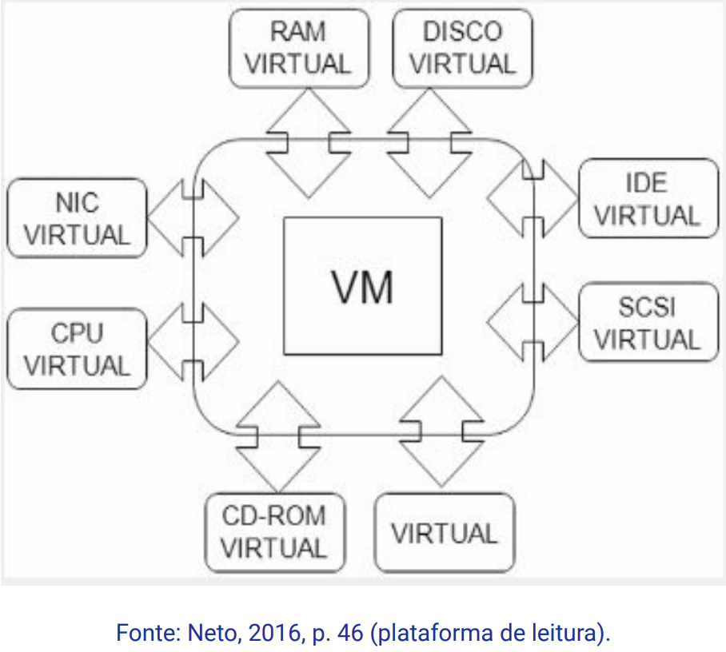
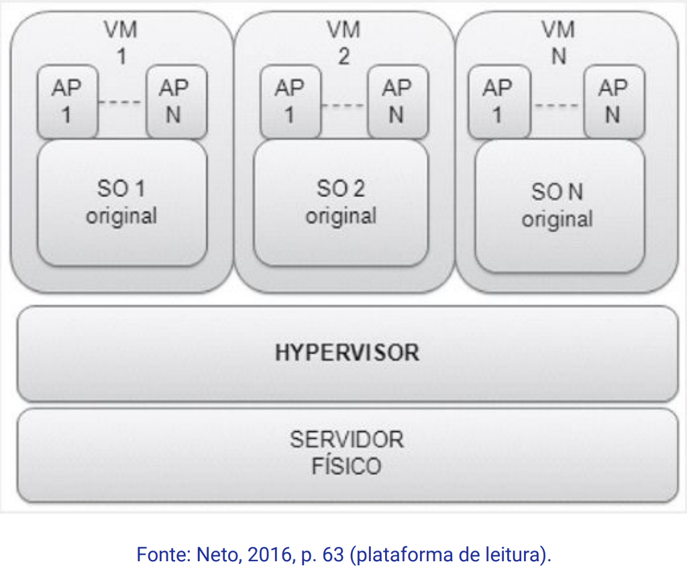
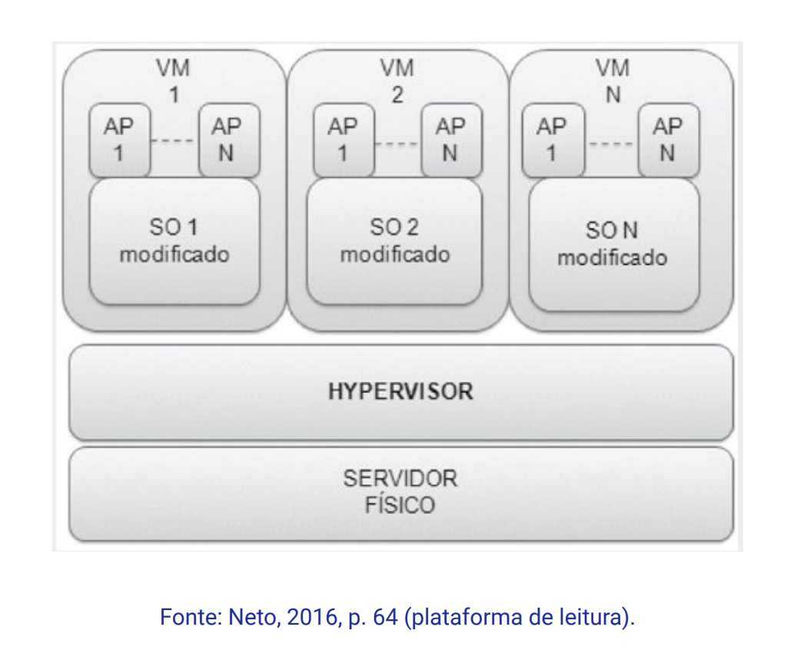
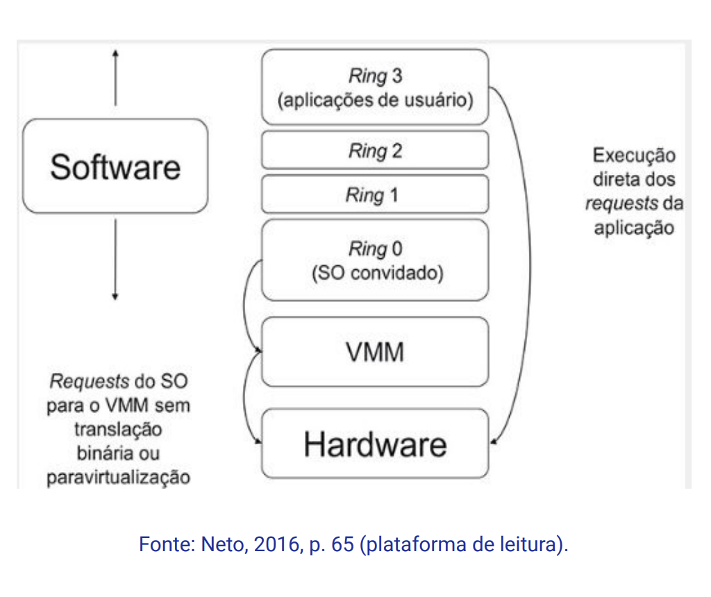
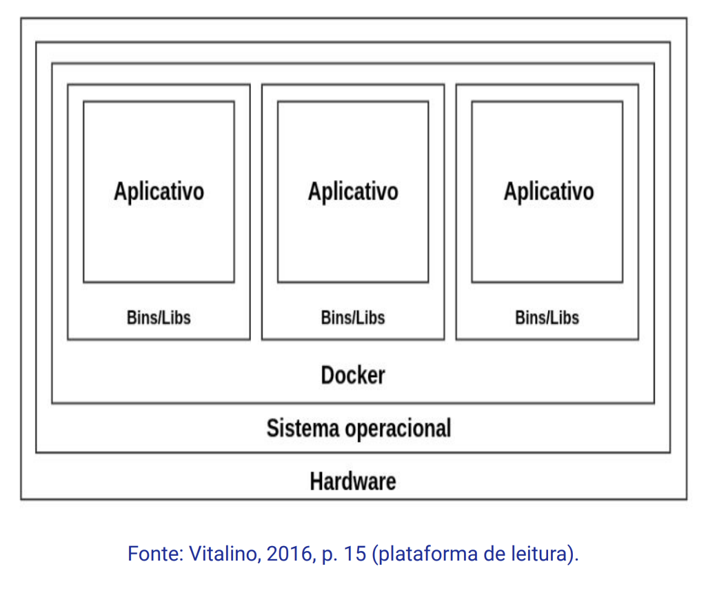

Disciplinas
INFRAESTRUTURA PARA SISTEMAS DE SOFTWARE Concluído
Materiais
Vídeo 1 - [UFMS Digital] Infraestrutura para Sistemas de Software - Módulo 4 - Unidade 2 - Os conceitos de Virtualização, e suas implementações sendProf.° ministrante: Carlos Alberto da Silva
Conteúdo
Os conceitos de Virtualização e suas implementações
- Origens da virtualização
- Evolução dos Data Center
- Infraestrutura como um Serviço (IaaS)
- Virtualização
- Virtualização por Container
Origens da virtualização
- Surgimento em meados da década de 1960.
- Grandes computadores ficaram mais velozes:
- Mas eram ineficientes em aproveitar o tempo de cálculo devido ao gerenciamento manual de processos feitos por um operador.
⇒ Surge o conceito de tempo compartilhado (Time Sharing).
- Robert P. Goldberg em 1972:
- Dissertação na Universidade de Harvard.
- Base teórica da arquitetura para sistemas computacionais virtuais.
- IBM lança um mainframe capaz de executar de forma simultânea diferentes sistemas operacionais (SO):
- Sob a supervisão de um controlador.
- Hypervisor.
Evolução dos Data Center
Evolução dos Data Center para Infraestrutura como um Serviço
- A utilização de recursos de virtualização produz vários Data Center virtuais:
- completamente autônomos;
- isolados (independentes uns dos outros).
- A Infraestrutura como um Serviço (IaaS) apresenta um nível maior de abstração do que a virtualização tradicional.
- Organizar vários servidores virtuais em um conjunto reduzido de servidores físicos.
- Ambientes de desenvolvimento, teste e produção (homologação de sistemas).
- Execução de aplicações que utilizam diferentes SO's.
- Provisionamento de servidores.
- Recuperação de desastres.
- Diminuir custos com TI (hardware e software).
- Diminuir custos com energia elétrica.
- Diminuir lixo tecnológico.
- Flexibilidade e agilidade para criação de ambientes corporativos.
⇒ Infraestrutura como um Serviço (IaaS).
Infraestrutura como um Serviço (IaaS)
Caracterização de um ambiente virtualizado- Sistemas operacionais diferentes podem rodar em máquinas virtuais
- provocando a ilusão de rodarem em uma máquina real.
- As limitações podem ser criadas nos níveis:
- de aplicação;
- de sistema operacional;
- do hardware.
- A virtualização é a tecnologia central da nuvem.
- Permite o aperfeiçoamento do uso dos recursos.
- Viabiliza o modelo de computação sob demanda.
- Transforma servidor físico em vários servidores virtuais.
- Reduz espaço físico.
- O ambiente implementado por meio de máquinas virtuais.
- Máquina virtual é a imitação de uma máquina real.
- É um bloco de software totalmente isolado.
- Se comporta como um servidor físico
- que tem CPU, memória RAM, disco rígido e NIC (network interface card)
⇒ Tudo virtual baseado em software.
VM Virtualização
HypervisorÉ um processo que cria e executa as máquinas virtuais.
Nomeclaturas:
- Monitor de Máquina Virtual (MMV);
- Virtual Machine Monitor (VMM);
- Servidor virtual;
- Monitor.
- Controla o hardware e disponibiliza os recursos para as VM's.
- Multiplexando, no tempo, as execuções das diversas VM's em uma máquina real.
- Cada VM utiliza um sistema operacional e suas respectivas aplicações.
- Virtualização permite diversas VM’s coexistindo em um mesmo servidor físico.
Hypervisor monolítico:
 Técnica de virtualização
Técnica de virtualização
Hypervisor total ou completa:
Hypervisor (Paravirtualização):
Virtualização Assistida por hardware:
Virtualização por Container:
Diferenças para ambientes virtualizados tradicionais
- Itens compartilhados que servem apenas para leitura:
- Container fica mais leve se comparado à VM.
- São mais rápidos no boot;
- Economiza os recursos do hardware (CPU, memória, etc.).
Referências:
NETO, Manoel V. S. Virtualização: tecnologia central do datacenter. 1a. edição. Rio de Janeiro: Brasport, 2016. p. 40-65. ISBN: 9788574527680. Disponível na Biblioteca Digital da UFMS.
SILVA, Fernanda R.; SOARES, Juliane A.; SERPA, Matheus S.; NETO, Roque M.; JUNIOR, José F. M. A.; OLIVEIRA, Hygo S.; Pichetti, Roni F. Cloud Computing. Editora Soluções Educacionais Integradas, 2020. p. 31-50. E-book. ISBN 9786556900193. Disponível na Biblioteca Digital da UFMS.
VITALINO, Jeferson F. N.; CASTRO, Marcus A. N. Descomplicando o Docker. 1a. edição. Rio de Janeiro: Brasport, 2016. p. 13-15. ISBN 9788574528007. Disponível na Biblioteca Digital da UFMS.